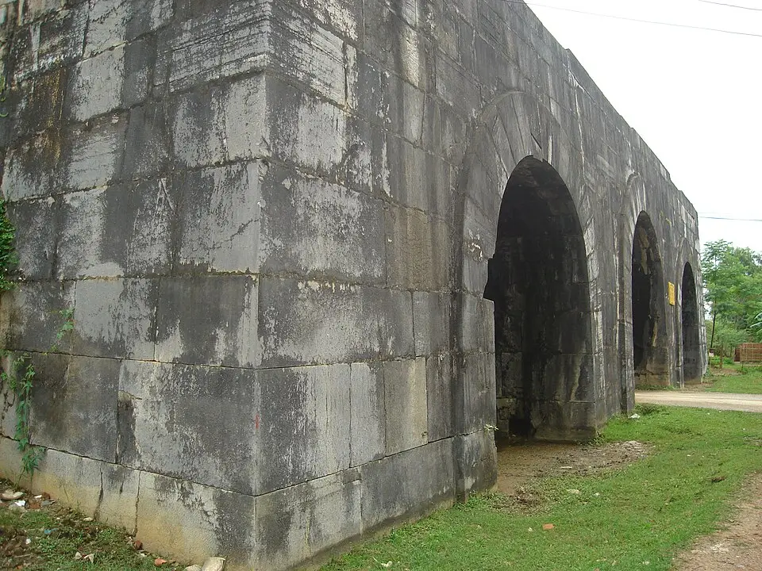
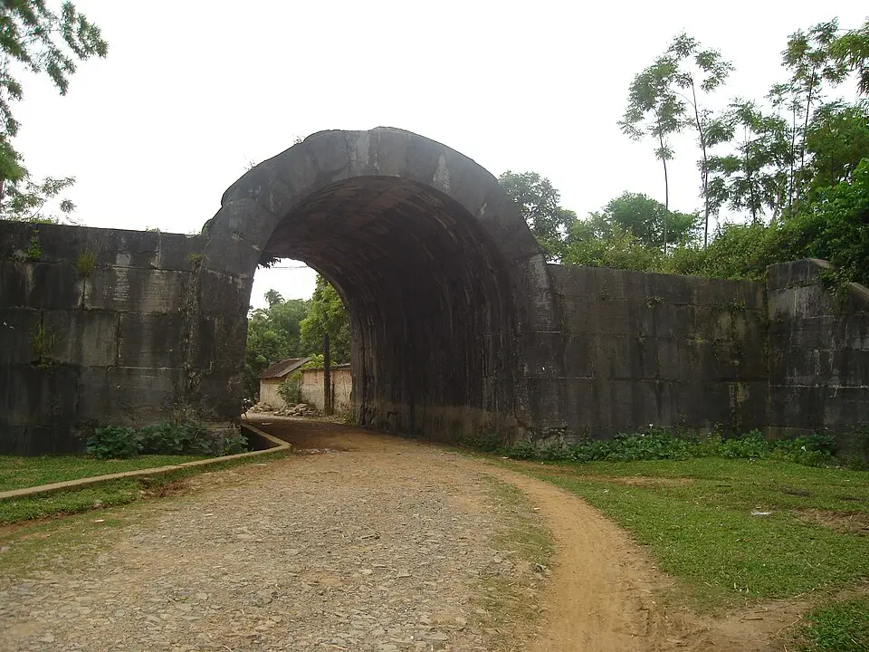
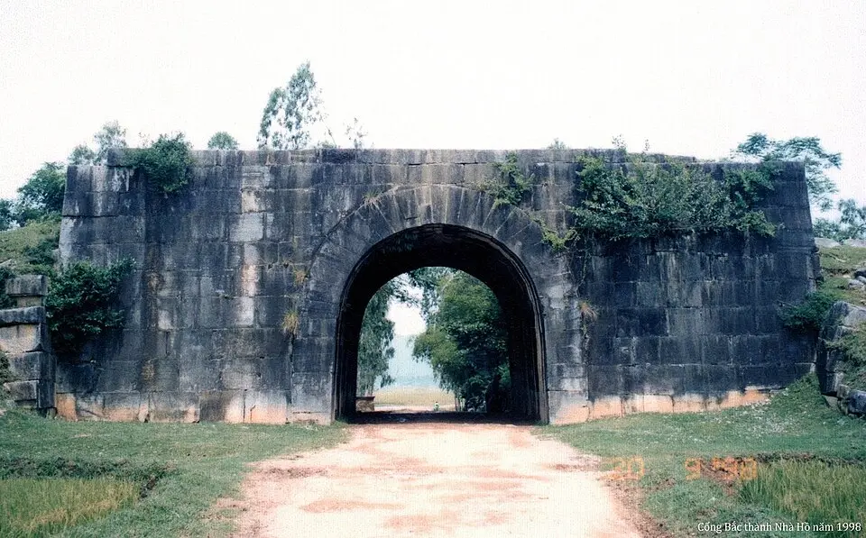
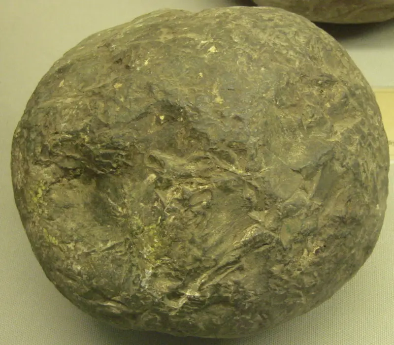

Thành nhà Hồ: tòa thành đá dựng trong ba tháng
Năm 1397, Hồ Quý Ly cho dựng ở Thanh Hóa một tòa thành ốp đá khối, có phiến nặng hơn chục tấn, xếp khít không cần vữa, trong khoảng ba tháng. Mười năm sau, quân Minh vào thành gần như không phải đánh.

Tháng giêng năm 1397, Hồ Quý Ly, khi ấy vẫn là quyền thần của nhà Trần, sai Đỗ Tỉnh vào động An Tôn ở Thanh Hóa xem đất. Chỉ khoảng ba tháng sau, giữa sông Mã và sông Bưởi đã có một tòa thành vuông, bốn mặt ốp đá khối, có phiến nặng hơn chục tấn. Hơn sáu thế kỷ sau, cung điện bên trong đã mất hết, nhưng bốn cổng đá vẫn đứng. Câu hỏi đáng đọc không chỉ là người xưa làm thế nào, mà còn là họ làm vội như vậy để làm gì.
Vì sao lại là Thanh Hóa
Động An Tôn có sông bao quanh, núi che chắn, lại thông được đường thủy, đường bộ. Theo Wikipedia tiếng Việt, Hồ Quý Ly xây thành để ép triều Trần dời đô khỏi Thăng Long, nơi thế lực tôn thất họ Trần còn mạnh. Đó là bước chuẩn bị cho việc thay ngôi.
Không phải ai cũng im lặng. Phạm Cự Luận và Nguyễn Nhữ Thuyết can ngăn việc dời đô. Hồ Quý Ly không nghe. Nguyễn Nhữ Thuyết bị cách chức, còn Phạm Cự Luận bị sai đi đánh giặc ở Tuyên Quang và tử trận. Tháng 11 năm ấy, vua Trần Thuận Tông bị ép dời kinh đô vào Thanh Hóa. Hai cung nhân Trần Ngọc Cơ và Trần Ngọc Kiểm khuyên riêng nhà vua rằng dời đô là để cướp ngôi, và cả hai bị giết.
Họ nói đúng. Tháng 2 năm 1400, Hồ Quý Ly buộc vua Trần nhường ngôi, lập nhà Hồ, đặt quốc hiệu Đại Ngu. Tây Đô trở thành kinh đô. Những cải cách khác của ông, như tiền giấy Thông bảo hội sao, là một câu chuyện riêng. Còn tòa thành thì được dựng xong chỉ trong khoảng ba tháng.
Đá, đất và ba tháng


Thành Tây Đô gần như vuông, mỗi cạnh khoảng 870 đến 880 m tùy cách đo, chu vi hơn 3,5 km. Các sách cũ cho những con số khác hẳn: Đại Nam nhất thống chí ghi mỗi mặt 120 trượng, tức khoảng 480 m. Tường thành không phải đá đặc. Lõi là đất đầm nện từng lớp, mặt ngoài và mặt trong ốp đá vôi. Đợt khai quật bức tường phía đông bắc năm 2018 đến 2019 cho thấy thân tường gồm khoảng 11 lớp đất, sỏi, đá dăm, mỗi lớp đầm chặt riêng.
Phiến đá thường dài khoảng 2 m, rộng 1 m, dày 0,7 m. Có phiến dài tới hơn 5 m. Wikipedia tiếng Việt ghi trọng lượng trung bình khoảng 10 đến 16 tấn, một số trên 20 tấn, nhưng các nguồn không thống nhất, và báo chí thường chỉ viết "hàng chục tấn". Đá được xếp so le theo kiểu chữ công, không dùng vữa, chỉ dựa vào sức nặng và độ khít của chính nó. Cổng Nam lớn nhất, có ba cửa vòm, cao khoảng 9,5 m.
Đá lấy từ đâu? Tháng 7 năm 2011, Trung tâm Bảo tồn Di sản Thành nhà Hồ báo tìm thấy hơn 20 phiến đá lớn ở núi An Tôn, cách thành khoảng 2 km về phía đông bắc. Tiến sĩ Tống Trung Tín, Viện trưởng Viện Khảo cổ học, cho rằng dấu chế tác trên mặt đá khớp với đá xây thành. Đá được đẽo thô tại mỏ rồi mới chở về. Còn chở bằng cách nào thì đến nay vẫn là giả thuyết, như lăn ra bờ sông rồi kéo bằng xe hoặc con lăn.
Làm vội thì có cái giá. Khoảng năm 1401, một phần tường đá bị sụt, triều đình phải cho xây bằng gạch ở phần trên. Một chi tiết nhỏ còn lại đến nay: trên nhiều viên gạch có in tên địa phương đã nộp gạch, như một bảng chấm công của cả nước. Chưa đầy mười năm sau, tòa thành phải đối mặt với thử thách thật.
Tường đá dày không thay được lòng người.
Năm 1407: tòa thành không cứu được triều đại


Cuối năm 1406, quân Minh kéo sang với khẩu hiệu "phù Trần diệt Hồ". Sử cũ chép rằng Tả tướng quốc Hồ Nguyên Trừng từng nói: "Thần không sợ đánh, chỉ sợ lòng dân không theo mà thôi." Thành Đa Bang bên sông Hồng thất thủ khoảng ngày 20 tháng 1 năm 1407. Chỉ một hai ngày sau, Đông Đô ở Thăng Long mất. Theo Wikipedia tiếng Anh, khoảng một tuần sau đó quân Minh vào Tây Đô mà không gặp kháng cự đáng kể.
Tường đá dày không thay được lòng người. Cha con Hồ Quý Ly bỏ chạy về phía nam. Tháng 6 năm 1407, họ bị bắt ở vùng Kỳ La, nay thuộc Hà Tĩnh, rồi bị giải sang Trung Quốc. Số phận sau đó của họ được chép khác nhau. Tháng 7, nhà Minh đặt Đại Ngu thành quận Giao Chỉ. Tây Đô làm kinh đô chưa đầy mười năm. Thứ còn lại sau triều đại ấy là đá.
Những gì còn lại


Cung điện trong thành gần như không còn. Còn lại bốn cổng đá, những đoạn tường thành, dấu tích nền điện chính với đôi rồng đá dài khoảng 3,6 m, và vòng La Thành đắp đất bên ngoài, có đoạn đến nay vẫn làm đê ngăn lũ. Ở sườn núi Đốn Sơn gần đó, khai quật từ năm 2006 đến 2010 làm lộ ra đàn Nam Giao, nơi nhà Hồ tế trời từ năm 1402.
Năm 1962, thành được xếp hạng di tích quốc gia. Ngày 27 tháng 6 năm 2011, UNESCO công nhận Thành nhà Hồ là Di sản Văn hóa Thế giới theo tiêu chí (ii) và (iv), với vùng lõi 155,5 ha. Cổng Nam, công trình hư hại nặng nhất, được gia cố từ năm 2018 đến 2020 bằng khoản tài trợ 92.500 đô la Mỹ từ Quỹ Bảo tồn Văn hóa của Đại sứ Hoa Kỳ.
Tòa thành được dựng trong ba tháng và giữ ngôi cho nhà Hồ chưa đầy mười năm, nhưng chính những phiến đá xếp vội ấy lại là phần bền nhất mà triều đại này để lại.